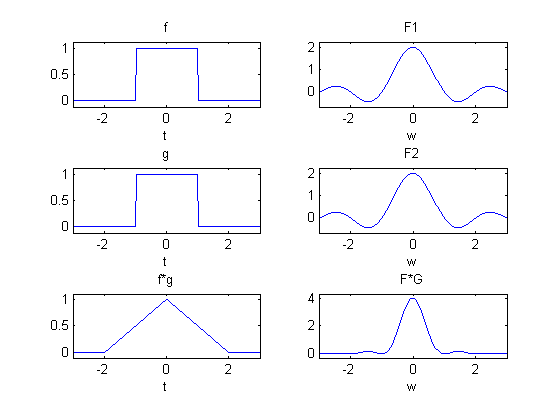

TALLER PROPIEDADES DE FOURIER
Contents
Integrantes
%{ Juan David Corrales Andres Giraldo Carvajal Sergio Alexander Florez Galeano %}
Variables Simbolicas
%{ t = Tiempo w = Frecuencia Angular %} syms t; syms w;
Convolucion en tiempo
Así como cualquier operación matemática, la Convolución es un proceso que requiere la presencia de dos cantidades, estas cantidades se conjugan en determinada forma y generan un resultado. Cuando en alguna de sus formas, la presencia de una cantidad tiene influencia sobre la presencia de otra y viceversa, existe una Convolución entre las dos cantidades. Es decir, en nuestro caso, la interacción de dos señales en el tiempo y en el espacio es la Convolución de esas dos señales. Esta interacción produce una tercera señal cuyas características están conformadas con características de ambas señales originales. Si queremos hacer pasar una señal a través de un sistema y este sistema contiene una señal característica la salida del sistema es el resultado de la Convolución de la entrada con la función caraterística.
% Funcion f f = pulso(t,2); subplot(); subplot(3,2,1); ezplot(f,[-3,3]); title('f'); % Funcion g g = heaviside(t+1)-heaviside(t-1); subplot(3,2,3); ezplot(g,[-3,3]); title('g'); % Convolucion f*g fg = (t/2+1)*pulso(t+1,2)+(-t/2+1)*pulso(t-1,2); subplot(3,2,5); ezplot(fg,[-3,3]); title('f*g'); % Transformada de la funcion f F = 2*sinc(w); subplot(3,2,2); ezplot(F,[-3,3]); title('F1'); % Transformada de la funcion g G = 2*sinc(w); subplot(3,2,4); ezplot(G,[-3,3]); title('F2'); % Transformada de la convolucion f*g FG = (2*sinc(w))^2; subplot(3,2,6); ezplot(FG,[-3,3]); title('F*G');
Traslacion en la frecuencia
El desplazamiento en frecuencia está relacionado con la propiedad de modulación, tan imprescindible en comunicaciones, se trata de desplazar una señal a diferentes frecuencias para tomar ventajas de diferentes partes del espectro electromagnético, permitiendo transmitir señales de televisión radio y otras aplicaciones a través del mismo espacio sin que haya interferencia.
% Funcion Original f = heaviside(t)*exp(-2*t); subplot(2,2,1); ezplot(f,[-2,5]); axis([-2,5,-0.5,1]); title('Funcion Original'); % Transformada de la funcion Original F = 1/(2+i*w); subplot(2,2,2); ezplot(sqrt(real(F)^2+imag(F)^2),[-2,5]); hold on; fase = ezplot(atan(imag(F)/real(F))); hold off; axis([-2,5,-0.5,1]); set(fase,'color','red'); title('Transformada de la Funcion Original'); % Funcion trasladada en la frecuencia con w = 3 ft = heaviside(t)*exp((-2+3i)*t); subplot(2,2,3); ezplot(sqrt(real(ft)^2+imag(ft)^2),[-2,5]); hold on; fase = ezplot(atan(imag(ft)/real(ft))); hold off; axis([-2,5,-0.5,1]); set(fase,'color','red'); title('Funcion trasladada w=3'); % Trasnforamda de la funcion transladada en la frecuencia w = 3 Ft = 1/(2+i*(w-3)); subplot(2,2,4); ezplot(sqrt(real(Ft)^2+imag(Ft)^2),[-2,5]); hold on; fase = ezplot(atan(imag(Ft)/real(Ft))); hold off; axis([-2,5,-0.5,1]); set(fase,'color','red'); title('Transformada de Funcion trasladada w=3');
Translacion en el Tiempo
El desplazamiento en el tiempo muestra que un desplazamiento en el tiempo es equivalente a un desplazo de fase lineal de la frecuencia. Ya que el contenido de la frecuencia depende solamente de la señal, el cual es invariable en el desplazo en el tiempo, entonces solamente la fase del espectro será alterada. Esta propiedad será probada usando la transformada de Fourier.
% Funcion Original f = 6*pulso(t,4); subplot(2,2,1); ezplot(f,[-5,10]); title('Funcion Original'); % Transformada de la funcion original F = sinc(w/(2*pi)); subplot(2,2,2); ezplot(F,[-5,10]); title('Transformada de la Funcion Original'); % Funcion trasladada en tiempo t=5 ft = 6*pulso(t-5,4); subplot(2,2,3); ezplot(ft,[-5,10]); title('Funcion trasladada en tiempo t=5'); % Transformada de la funcion trasladada t=5 Ft = exp(-5*i*w)*((12*sin(2*w))/w); subplot(2,2,4); ezplot(sqrt(real(Ft)^2+imag(Ft)^2),[-5,10]); hold on; fase = ezplot(atan(imag(Ft)/real(Ft))); hold off; axis([-5,10,-1,25]); set(fase,'color','red'); title('Transformada de la funcion trasladada');
Escalamiento
Esta propiedad permite determinar el efecto en la representación del dominio de frecuencia para una señal si la variable tiempo es alterada. El concepto más importante para entender la propiedad de escalamiento es que las señales estrechas en el tiempo son amplias en la frecuencia y viceversa. Como demostración se tiene la siguiente señal:
% Funcion Original f = pulso(t,2); subplot(2,2,1); ezplot(f,[-3,3]); title('Funcion Original'); % Trasnformada de la funcion original F = 2*sin(w)/w; subplot(2,2,2); ezplot(F,[-10,10]); title('Transformada de la Funcion Original'); % Funcion Escalada ampliada en el tiempo fe = pulso(t,4); subplot(2,2,3); ezplot(fe,[-3,3]); title('Funcion Escalada'); % Transformada de la funcion Escalada F = 2*sin(2*w)/w; subplot(2,2,4); ezplot(F,[-10,10]); axis([-10,10,-1,4.5]); title('Transformada de la Funcion Escalada');